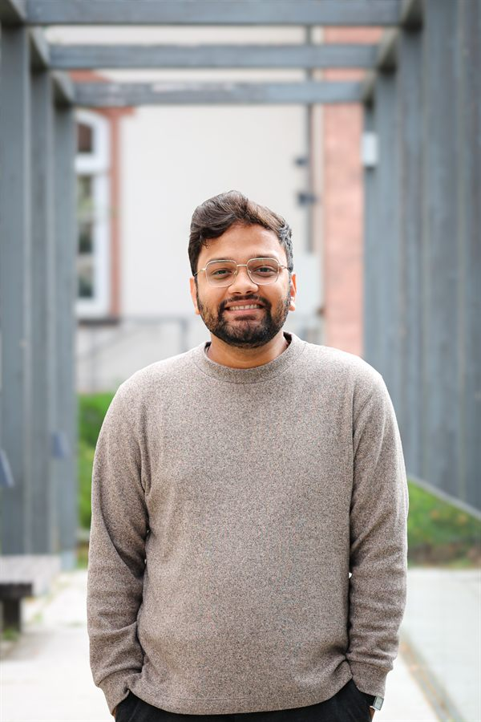

★[ OK ] session: sai-archiv★ last indexed: 19 May 2026★ drafting: "the strike as a waiting game" (Oxford, Jun 2026)★ forthcoming: ECSAS · Oxford · SAI summer colloquium★ now reading: joshi, lost worlds · thompson on time-discipline★ SSLH bursary — British Library & CSAS Cambridge, 2025★ DAAD funded since 2024★ archive open since 1914★ mood: mildly haunted★ coffee count today: 3★[ OK ] session: sai-archiv★ last indexed: 19 May 2026★ drafting: "the strike as a waiting game" (Oxford, Jun 2026)★ forthcoming: ECSAS · Oxford · SAI summer colloquium★ now reading: joshi, lost worlds · thompson on time-discipline★ SSLH bursary — British Library & CSAS Cambridge, 2025★ DAAD funded since 2024★ archive open since 1914★ mood: mildly haunted★ coffee count today: 3
OUTPUT
[ OK ] Starting session — sai-archiv[ OK ] Profile loaded: KUMAR, SRAJIT M.[ INFO ] Last indexed: 19 May 2026
Identity
$whoissrajit

name
:Srajit M. Kumar
role
: PhD candidate (2024—), Dept. of History
org
:South Asia Institute · Heidelberg University
advisor
: Prof. Dr. Kama Maclean
fund
: DAAD PhD scholar · UGC-NET (2022)
prior
: MA Delhi (2020–22) · BA (Hons) Jamia (2017–20)
fields
: labour history, time-discipline, partition, communalism, urban Delhi, C18 South Asia
langs
: Hindi · English (C2) · Urdu · Gujarati
About
$catabout.txt
I am a PhD candidate in History at the South Asia Institute, Heidelberg
University, supervised by Prof. Dr. Kama Maclean and funded by a DAAD PhD
scholarship. My research sits at the intersection of labour history,
the history of time, and the political life of the working class
in late-colonial North India.
I read for my BA (Hons) in History at Jamia Millia Islamia, New Delhi
(2017–2020) and for my MA in History at the University of Delhi
(2020–2022), specialising in Modern Indian History. Before Heidelberg
I worked in Delhi's archives on questions of urban labour, communal
violence, and the long afterlife of partition — including as an oral
history intern at the Partition Museum, a research assistant at CSDS, and a
heritage-walk leader across Old and New Delhi.
In 2025 I held a research bursary from the Society for the Study of Labour
History (SSLH) for archival work at the British Library and the Centre for
South Asian Studies, Cambridge.
OUTPUT
[ OK ] Opened: /archive/dissertation/[ INFO ] Status: in progress · 1880s – 1950s
[ .. ] last edit: 19 May 2026
$catdissertation.txt
Time, Work, and Politics:The Kanpur Working Classes, 1880s – 1950s
in progresssupervisor: K. Macleanfund: DAADbursary: SSLH (2025)
The project examines how labourers from the agrarian United Provinces
adapted to industrial employment in Kanpur — in particular, how their
perception and experience of time shifted during this transition, and
the political consequences of that shift. Rather than reading the clock
as the coloniser of working-class life, I argue that Kanpur's mill-workers
resisted, negotiated, and at moments turned the clock into an instrument
of their own.
┌─ 1881 ─────┬─ 1914 ─────┬─ 1928 ─────┬─ 1947 ─────┐
│ factory │ war │ strike │ parti │
│ act │ labour │ wave │ -tion │
└────────────┴────────────┴────────────┴────────────┘
$lsinterests/
★ labour history
★ history of time & industrial discipline
★ partition of India
★ communalism
★ eighteenth-century South Asia
★ urban history of Delhi
★ archival method
$cathonours.log
2025
Research Bursary — Society for the Study of Labour History (SSLH), UK.
Archival research at the British Library, London & CSAS, Cambridge (Aug–Sep 2025).[ report ↗ ]
2024
DAAD PhD Research Grant — Deutscher Akademischer Austauschdienst, Bonn.
Awarded for PhD at SAI, Heidelberg.
2024
LGF Doctoral Grant — Graduiertenakademie, Universität Heidelberg.
Declined in favour of DAAD.
2022
UGC‑NET — Assistant Professor (History) qualification, Govt. of India.
OUTPUT
[ OK ] Opened: talks.log[ INFO ] 7 entries · 2 forthcoming · most recent: Oct 2025
$cattalks.log
[ FORTHCOMING ]colloquium
Paper title TBA
Summer Semester Colloquium · SAI, Heidelberg
[ FORTHCOMING ]workshop
The Strike as a Waiting Game: Temporality and Working-Class Politics in Kanpur, 1924–38
Labour Network · Oxford Centre for Research in the Humanities, University of Oxford
conference
Tamasha at the Parade Ground: Sonic Dissent and the Creation of a Crisis in 20th Century Kanpur
ECSAS Bi-Annual Conference · Heidelberg, Germany
conference
Time, (Non)Work and Labour: Kanpur, 1880s–1950s
International Conference on Nights and Nocturnalities in South Asia · ZMO, Berlin
On how working-class populations in twentieth-century agrarian North India encountered
and reshaped temporal concepts during their transition to industrial urban life in
Kanpur — and how they sometimes turned the clock into an instrument of negotiation
and resistance.
workshop
Looking at Gandhi Through Koselleck's Lens: Towards a Conceptual History of Gandhi's Brahmacharya
Cambridge Gender and Sexuality History Workshop (online)
seminar
Who Owns The Forest?: A Debate in 1880s India
National Seminar on Indian History Writing Traditions · India International Centre, New Delhi
OUTPUT
[ OK ] Opened: writing/[ INFO ] 6 entries · popular press & commentary